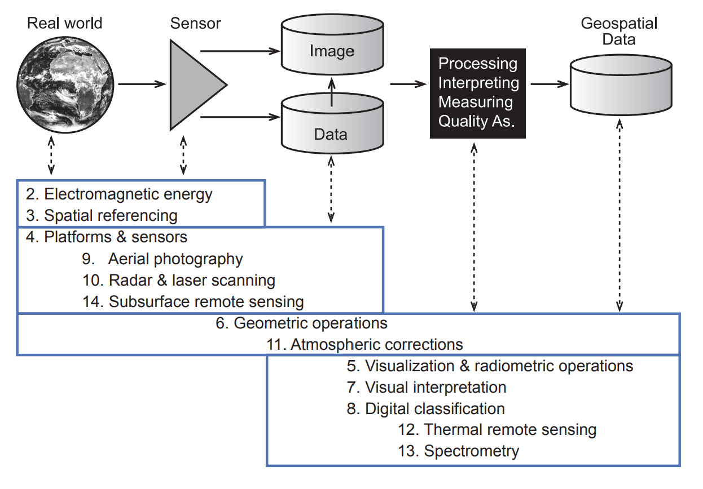
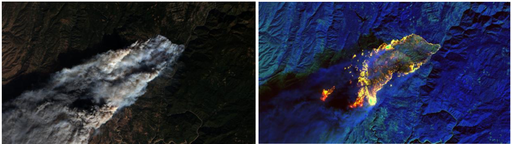

| Index | Description | Formula |
|---|---|---|
| Normalized Difference Water Index (NDWI) | Utilized to identify water bodies by comparing the difference between green and near-infrared band reflectance. | $$NDWI = \frac{(Green - NIR)}{(Green + NIR)}$$ |
| Normalized Difference Built-up Index (NDBI) | Employed to detect built-up areas by comparing the difference between near-infrared and shortwave infrared band reflectance. | $$NDBI = \frac{(SWIR - NIR)}{(SWIR + NIR)}$$ |
| Soil Adjusted Vegetation Index (SAVI) | Similar to NDVI but adjusts for soil background effects, particularly in areas with sparse vegetation cover. | $$SAVI = \frac{((NIR - Red) \times (1 + L))}{(NIR + Red + L)}$$ where ( L ) is the soil adjustment factor. |
| Enhanced Vegetation Index (EVI) | An enhanced version of NDVI that incorporates blue and red-edge bands, providing better sensitivity to high-density vegetation areas. | $$EVI = G \times \frac{(NIR - Red)}{(NIR + C_1 \times Red - C_2 \times Blue + L)}$$ where G is the gain factor, C_1 and C_2 are coefficients, and L is the canopy background adjustment. |
| Soil Moisture Index (SMI) | Used to estimate soil moisture content and soil wetness conditions in agricultural and hydrological studies. | $$SMI = \frac{(NIR + SWIR)}{2}$$ |
| Land Surface Temperature and Vegetation Index (LSTVI) | Combines information from land surface temperature (LST) and vegetation indices to analyze urban heat island effects and land use changes. | $$LSTVI = \frac{(Tb - NDVI)}{(Tb + NDVI)}$$ where ( Tb ) is the land surface temperature. |
3 Week3 - Remote Sensing Data
3.1 Abstract
Remote Sensing Data
This lecture mainly provides detailed information on remote sensing cities and environments, especially on the use and processing of remote sensing data, and introduces the correction methods of remote sensing data, including geometric, atmospheric, orthographic/topographic correction and radiometric correction. Prior to this, data processing is required, including data linking and enhancement such as feathering, image enhancement, and other enhancement techniques. In addition to this, this lesson introduces remote sensing technology, explaining the different types of remote sensing sensors, such as push-sweep and scan sensors, and how they work.
3.2 Summary
The various techniques, including atmospheric correction and imagery merging, used in remote sensing to enhance and process imagery data share common principles. While they serve different purposes1, they share some common principles:
Data Transformation: Most of these techniques involve transforming the raw data to enhance its usability and interpretability. This transformation can be radiometric, spatial, or spectral.
Enhancement of Information: These methods aim to enhance the quality of the data to make it more useful for analysis. This could involve reducing noise, highlighting certain features, or combining data from different sources.
Mathematical and Statistical Methods: Many of these techniques rely on mathematical and statistical methods to process the data. This includes algorithms for filtering, statistical analysis for PCA, and mathematical models for atmospheric correction.
Improvement of Visualization: Techniques such as enhancement and filtering are often used to improve the visualization of imagery, making it easier to interpret and analyze.

Remote sensing process and ‘Remote Sensing for Earth Observation’ book chapters(Klaus Temfli et al., 2009)2
In remote sensing analysis, the Normalized Difference Vegetation Index (NDVI) is a widely used index for assessing vegetation health and density by comparing the difference between near-infrared (NIR) and red band reflectance. \[NDVI= \frac{NIR-Red}{NIR+Red}\]
Besides NDVI, various other indices are commonly used to extract information about land cover and land use, enhancing the overall information derived from remote sensing data. Here is a summary of some common remote sensing indices.
These indices play crucial roles in various applications such as land cover classification, vegetation monitoring, and environmental assessments.
3.3 Application
In practical applications, these indices are not used in isolation but are often combined to enhance the interpretation and extraction of information from imagery data. Combining multiple indices in remote sensing analysis can provide more comprehensive insights and improve the accuracy of the results.
Kim, S.W et al.(2021)3, discusses various indices used to estimate and analyze urban heat island (UHI) intensity and magnitude. It highlights the use of NDVI for extracting land surface temperature data from satellite images, NDBI for analyzing the built environment, EVI for assessing vegetation coverage, and the Biophysical Composition Index (BCI) for describing urban biophysical characteristics. These indices help researchers to more accurately estimate and analyze UHI intensity and magnitude.
| Schultz, M. et al.(2016)[^wk3_rs_data-4] evaluates the performance of eight vegetation indices (VI) from Landsat time series (LTS) for monitoring deforestation across tropical regions. It uses a robust reference database to assess spatial accuracy, sensitivity to observation frequency, and the performance of combined VI. The study mentions the use of the Normalized Difference Fraction Index (NDFI) sensitive to canopy cover, moisture-related VIs (Normalized Difference Moisture Index (NDMI) and Tasseled Cap Wetness (TCw)) that performed spatially better than greenness-related VIs (Normalized Difference Vegetation Index (NDVI) and Tasseled Cap Greenness (TCg)). The spatial accuracy improved, and the overestimation of changes decreased when VIs were fused at the feature level. [^wk3_rs_data-4]: Schultz, M., Verbesselt, J.G.P.W., Carter, S., Verbesselt, J., Avitabile, V., Quang, H.V., & Herold, M. (2016). ‘Performance of Landsat time series vegetation indices for monitoring deforestation’, _International Journal of Applied Earth Observation and Geoinformation_, vol. 52, pp. 318-327. |  |
These examples illustrate how combining multiple indices can enhance the analysis and provide more accurate and detailed information for various remote sensing applications.
3.4 Reflection
During my undergraduate dissertation project, I encountered challenges in processing remote sensing data due to significant smoke obscuring vegetation on the land surface. It was my first experience using Python to convert remote sensing images into multidimensional numerical matrices, where each dimension corresponded to different spectral bands of the original remote sensing data. Interestingly, the principle behind performing band calculations in Python was essentially the same as that of commonly used remote sensing index formulas. I realized that applying index calculation formulas in Python involved performing arithmetic operations such as addition, subtraction, multiplication, and division on these multidimensional numerical matrices.
So this is an example of the band processing I did in my undergraduate program to make the forest fire point more prominent in the image:

This realization underscores the significance of hands-on practice and theoretical knowledge integration in effectively utilizing remote sensing techniques for various environmental analyses and research endeavors.
Lillesand, T.M. & Kiefer, R.W., 1987. Remote sensing and image interpretation. 2nd ed1. New York: Wiley. https://archive.org/details/remotesensingima00lill/page/1/mode/1up↩︎
Tempfli, K, Huurneman, GC, Bakker, WH, Janssen, LLF, Feringa, WF, Gieske, ASM, Grabmaier, KA, Hecker, CA, Horn, JA, Kerle, N, van der Meer, FD, Parodi, GN, Pohl, C, Reeves, CV, van Ruitenbeek, FJA, Schetselaar, EM, Weir, MJC, Westinga, E & Woldai, T 2009, Principles of remote sensing: an introductory textbook. ITC Educational Textbook Series, vol. 2, International Institute for Geo-Information Science and Earth Observation, Enschede. http://www.itc.nl/library/papers_2009/general/PrinciplesRemoteSensing.pdf↩︎
Kim, S.W. and Brown, R., 2021. “Urban Heat Island (UHI) intensity and magnitude estimation: A systematic literature review.” Science of The Total Environment, 779, p.146389. DOI: <10.1016/j.scitotenv.2021.146389>↩︎